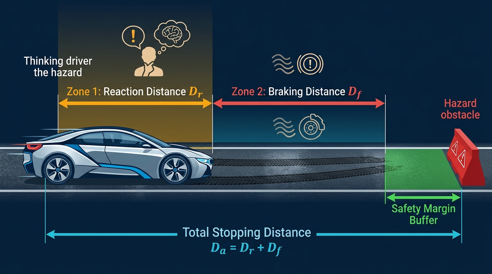

Série N°6 : Les Procédures
Exercice 1 : QCM Notions de base sur les Procédures
🟢 Facile- Une procédure est un sous-programme qui effectue des actions ou calcule plusieurs résultats sans renvoyer de valeur unique dans son nom. Elle ne comporte jamais de type de retour dans son en-tête ni d'instruction
Retourner. - L'appel d'une procédure s'effectue comme une instruction autonome :
NomProc(arg1, arg2). - Passage par valeur : transmet une copie de l'argument (paramètre d'entrée). La variable effective reste intacte.
- Passage par variable / adresse (noté
@en algorithme) : transmet la référence directe de la variable (paramètre de sortie ou d'entrée-sortie). Toute modification est répercutée immédiatement sur la variable appelante.
Cochez la bonne réponse pour chacune des 10 questions suivantes :
Question 1
Quelle est la différence fondamentale entre une fonction et une procédure en algorithmique ?
- Une procédure ne peut contenir aucune boucle
- Une fonction renvoie un résultat unique à travers son nom, tandis qu'une procédure ne renvoie pas de résultat directement par son nom
- Une procédure ne peut recevoir aucun paramètre
- Une fonction s'exécute toujours plus rapidement qu'une procédure
Question 2
Quelle est la syntaxe correcte de l'en-tête d'une procédure affichant les diviseurs d'un entier ?
- Procédure Afficher_Diviseurs(n : Entier)
- Fonction Afficher_Diviseurs(n : Entier) : Vide
- Procédure Afficher_Diviseurs(n : Entier) : Entier
- Début Procédure Afficher_Diviseurs(n : Entier)
Question 3
Comment s'effectue l'appel d'une procédure Initialiser(x, y) dans le programme principal ?
- res ← Initialiser(x, y)
- Ecrire(Initialiser(x, y))
- Initialiser(x, y) (comme une instruction autonome isolée)
- Si Initialiser(x, y) Alors ...
Question 4
Dans l'en-tête Procédure Calcul(a : Entier, @b : Entier), quel est le mode de passage du paramètre b ?
- Passage par valeur
- Passage par variable (ou par adresse), indiqué par le symbole @
- Passage par constante
- Passage global automatique
Question 5
Lors d'un passage par valeur, si le sous-programme modifie le paramètre formel dans son corps :
- Seule la copie locale est modifiée, la variable effective d'origine reste rigoureusement inchangée
- La variable effective dans le programme principal est immédiatement modifiée
- Une erreur d'exécution bloque le programme
- La variable est supprimée de la mémoire
Question 6
Quel mode de passage doit obligatoirement être attribué à un paramètre qui doit transmettre un résultat calculé vers le programme appelant ?
- Le passage par valeur
- Le passage par constante
- Le passage par variable (par adresse, noté @)
- Le passage par chaîne
Question 7
Peut-on utiliser l'instruction Retourner val dans le corps d'une procédure algorithmique ?
- Oui, c'est même obligatoire à la fin de chaque procédure
- Non, l'instruction Retourner est strictement réservée aux fonctions
- Oui, mais uniquement si val est de type entier
- Oui, si la procédure comporte au moins deux paramètres
Question 8
Soit l'en-tête Procédure Incrementer(@x : Entier). Quel appel est illégal ?
Incrementer(5)(car 5 est une valeur constante, pas une variable capable de recevoir une modification)Incrementer(compteur)(où compteur est une variable entière)Incrementer(total)(où total est une variable entière)Incrementer(n)(où n est un entier)
Question 9
Une variable déclarée dans le T.D.O.G. (Objets Globaux) du programme principal :
- N'est accessible que dans le programme principal et interdite dans les procédures
- Est détruite dès qu'un sous-programme commence à s'exécuter
- Est accessible en lecture dans l'ensemble du programme et de ses sous-programmes
- Doit obligatoirement être de type réel
Question 10
En Python 3, les types simples scalaires (int, float, str, bool) sont immuables (inchangeables en place). Pour qu'une procédure modifie directement une variable globale de type int selon les conventions officielles 2024-2025, on déclare dans la fonction :
local nom_varglobal nom_varpointer nom_varstatic nom_var
Exercice 2 : QCM Analyse de Traces & Effets de Bord
🟠 IntermédiaireAnalysez rigoureusement les algorithmes et traces d'exécution suivants :
Question 1
Soit l'algorithme suivant :
Procédure Test(a : Entier, @b : Entier)
Début
a ← a + 10
b ← b + 10
Fin
// Dans le programme principal :
x ← 5
y ← 5
Test(x, y)Quelles sont les valeurs finales de x et y après l'exécution de Test(x, y) ?
- x = 5 et y = 15 (a est par valeur donc x est inchangé ; b est par variable @ donc y est modifié)
- x = 15 et y = 15
- x = 5 et y = 5
- x = 15 et y = 5
Question 2
Un élève écrit la procédure de permutation suivante :
Procédure Permuter(x : Entier, y : Entier)
Début
aux ← x
x ← y
y ← aux
FinPourquoi les variables du programme appelant ne sont-elles pas échangées après l'appel Permuter(a, b) ?
- Parce que la variable tampon
auxest mal orthographiée - Parce que
xetysont passés par valeur : seule la copie locale a été permutée, sans affecteraetb - Parce que la permutation nécessite obligatoirement 3 paramètres
- Parce qu'il manque l'instruction
Retourner
Question 3
Pour corriger la procédure de l'exercice précédent et rendre la permutation effective en mémoire, il faut écrire :
Procédure Permuter(@x : Entier, y : Entier)Procédure Permuter(x : Entier, @y : Entier)Procédure Permuter(@x : Entier, @y : Entier)Fonction Permuter(x : Entier, y : Entier) : Entier
Question 4
Soit une procédure de saisie sécurisée :
Procédure Saisie(@n : Entier)
Début
Répéter
Ecrire("Donner N (N > 0) : ")
Lire(n)
Jusqu'à n > 0
FinPourquoi le symbole @ est-il strictement indispensable devant n ?
- Pour que la boucle Répéter puisse s'exécuter
- Pour transmettre la valeur lue au clavier à la variable effective du programme principal lors du retour
- Pour empêcher la saisie de caractères alphabétiques
- Pour convertir automatiquement
nen réel
Question 5
Soit le script Python suivant avec variable globale :
compteur = 0
def incrementer():
global compteur
compteur += 1
incrementer()
incrementer()
print(compteur)Quelle valeur est affichée à l'écran ?
- 2
- 0
- 1
- Une erreur UnboundLocalError
Question 6
En Python, si l'on omet l'instruction global compteur dans la fonction précédente lors d'une affectation compteur += 1 :
- Python incrémente automatiquement la variable globale
- Python crée une variable sans valeur
- Une erreur
UnboundLocalError: local variable 'compteur' referenced before assignmentest levée - Le compteur prend la valeur None
Question 7
Peut-on appeler une fonction à l'intérieur du corps d'une procédure en algorithmique ?
- Non, une procédure ne peut jamais faire appel à un autre sous-programme
- Oui, une procédure peut librement appeler une fonction et utiliser sa valeur de retour dans ses calculs ou conditions
- Uniquement si la fonction retourne obligatoirement une valeur entière
- Non, seules les fonctions ont le droit d'appeler d'autres fonctions
Question 8
Soit la procédure suivante calculant simultanément le quotient entier et le reste de deux nombres :
Procédure Division_Euclidienne(a : Entier, b : Entier, @q : Entier, @r : Entier)
Début
q ← a Div b
r ← a Mod b
FinQuels sont respectivement les statuts des paramètres a, b, q, r ?
- a et b sont des paramètres d'entrée (par valeur) ; q et r sont des paramètres de sortie (par variable @)
- Tous les 4 sont des paramètres de sortie
- a et b sont des paramètres de sortie ; q et r sont des paramètres d'entrée
- Tous les 4 sont des paramètres d'entrée
Question 9
Qu'appelle-t-on le masquage d'une variable globale ?
- L'effacement définitif de la variable du disque dur
- La déclaration d'une variable locale portant le même identificateur qu'une variable globale, rendant la globale inaccessible dans ce sous-programme
- La transformation d'un entier en chaîne secrète
- L'utilisation de tirets bas dans le nom de la variable
Question 10
Dans quel cas de conception la structure Procédure est-elle incontournable ?
- Lorsqu'on doit tester si un nombre est pair
- Lorsqu'on effectue un simple calcul d'aire $S = L \times l$
- Lorsqu'on doit réaliser un traitement produisant plusieurs résultats distincts ou modifiant des variables existantes (saisie, tri, remplissage, échange)
- Lorsqu'on calcule une racine carrée
Exercice 3 : Horodatage & Décomposition Temporelle (Mixte Chronométrie)
🟢 Facile
Dans un système de chronométrage sportif ou de supervision réseau, les mesures de durée sont capturées sous la forme d'un nombre total de secondes écoulées (par exemple total_sec = 7543 secondes).
Pour restituer ce temps sous une forme humaine conventionnelle HH:MM:SS (par exemple "02:05:43"), on souhaite mettre en place une architecture modulaire collaborative combinant fonctions et procédures :
- Une fonction
Formater_2Chiffres(val : Entier) : Chaînequi prend un entier compris entre 0 et 59 et retourne une chaîne de deux chiffres (en préfixant d'un zéro si nécessaire : $5 \to \text{"05"}$, $42 \to \text{"42"}$). - Une procédure
Decomposer_Temps(total_sec : Entier, @h : Entier, @m : Entier, @s : Entier)qui extrait simultanément le nombre d'heures, de minutes et de secondes restantes à partir de la durée brute en secondes. - Une fonction
Formater_Horloge(h : Entier, m : Entier, s : Entier) : Chaînequi appelleFormater_2Chiffrespour construire et retourner la chaîne finale au format officiel"HH:MM:SS". - Une procédure
Afficher_Bilan_Chrono(total_sec : Entier)qui appelleDecomposer_TempsetFormater_Horloge, puis affiche le temps formaté et son détail textuel.
Travail demandé :
- Pourquoi le calcul des composantes temporelles est-il confié à une procédure (
Decomposer_Temps) plutôt qu'à une simple fonction ? - Justifier le mode de passage des paramètres dans
Decomposer_Temps: passage par valeur pourtotal_sec, et passage par variable avec@pourh,mets. - Rédiger l'algorithme de la fonction
Formater_2Chiffres(val : Entier) : Chaîne. - Dresser le Tableau de Déclaration des Objets Locaux (T.D.O.L.) et rédiger l'algorithme officiel de la procédure
Decomposer_Temps. - Rédiger l'algorithme de la fonction
Formater_Horlogeet de la procédureAfficher_Bilan_Chrono. - Traduire ces sous-programmes en Python 3 selon les conventions officielles 2024-2025.
- Pour décomposer le temps en secondes : $h \leftarrow total\_sec \text{ Div } 3600$, le reste intermédiaire $reste \leftarrow total\_sec \text{ Mod } 3600$, puis $m \leftarrow reste \text{ Div } 60$ et $s \leftarrow reste \text{ Mod } 60$.
- Pour
Formater_2Chiffres, utiliser la fonction standardConvCh(val): si $val < 10$, concaténer"0" + ConvCh(val), sinon retournerConvCh(val). - Dans
Decomposer_Temps, déclarer la variable intermédiairerestedans le T.D.O.L. de la procédure. - En Python, pour simuler la modification de variables scalaires passées en argument, on utilise soit la réaffectation multiple par tuple (ex:
h, m, s = decomposer_temps(total_sec)), soit le mot-cléglobal.
•
total_sec = 3661 → $h = 1, m = 1, s = 1$ → Horloge : "01:01:01".•
total_sec = 7543 → $h = 2, m = 5, s = 43$ → Horloge : "02:05:43".•
total_sec = 59 → $h = 0, m = 0, s = 59$ → Horloge : "00:00:59".
Exercice 4 : Sécurité Routière & Distance d'Arrêt (Mixte Cinématique & Diagnostic)
🟢 FacileEn sécurité routière et en physique appliquée, la distance totale d'arrêt d'un véhicule $D_a$ face à un obstacle imprévu se compose de deux phases successives :
- La distance de réaction ($D_r$) : parcourue à vitesse constante pendant le temps de réflexe du conducteur ($t_r$, estimé à $1.0\text{ s}$ pour un conducteur vigilant). En convertissant la vitesse de km/h en m/s ($v_{ms} = \frac{v}{3.6}$), on a : $D_r = v_{ms} \times t_r$.
- La distance de freinage ($D_f$) : décélération active des freins jusqu'à l'arrêt complet selon la pesanteur ($g = 9.81\text{ m/s}^2$) et l'adhérence $\mu$ :
$$D_f = \frac{v_{ms}^2}{2 \times g \times \mu}$$
$\mu = 0.8$ sur route sèche (
"Sec"), $\mu = 0.4$ sur route mouillée ("Mouille"), et $\mu = 0.1$ sur route verglacée ("Verglace").
La distance totale d'arrêt vaut la somme des deux distances : $D_a = D_r + D_f$. On souhaite concevoir un module embarqué combinant fonctions et procédures :

- Une fonction
Adherence_Route(etat : Chaîne) : Réelqui reçoit l'état textuel de la route et renvoie le coefficient de frottement $\mu$ correspondant ($0.8$, $0.4$, ou $0.1$ ; $0.5$ par défaut si non reconnu). - Une fonction
Distance_Freinage(vitesse_kmh : Réel, coef_mu : Réel) : Réelqui calcule et retourne la distance de freinage physique $D_f$ en mètres. - Une procédure
Calculer_Securite_Arret(vitesse_kmh : Réel, etat_route : Chaîne, temps_reac : Réel, @dist_reac : Réel, @dist_frein : Réel, @dist_arret : Réel)qui calcule simultanément les trois distances ($D_r$, $D_f$ et $D_a = D_r + D_f$) et les restitue via trois paramètres de sortie passés par variable (@). - Une fonction
Tester_Collision(dist_arret : Réel, dist_obstacle : Réel) : Booléenqui renvoieVraisi $dist\_arret > dist\_obstacle$ (choc inévitable), etFauxsi le véhicule parvient à s'arrêter avant l'obstacle. - Une procédure
Afficher_Diagnostic_Routier(vitesse_kmh : Réel, etat_route : Chaîne, dist_obstacle : Réel)qui coordonne l'appel aux sous-programmes (en fixant le temps de réaction à $1.0\text{ s}$), puis affiche un compte-rendu clair : distances décomposées, verdict de collision ou d'arrêt sécurisé, et marge restante ou distance manquante.
Travail demandé :
- Pourquoi le calcul simultané des trois composantes ($D_r$, $D_f$, $D_a$) nécessite-t-il l'emploi d'une procédure plutôt que d'une fonction unique ?
- Rédiger l'algorithme de la fonction
Adherence_Route(etat : Chaîne) : Réel. - Rédiger l'algorithme de la fonction
Distance_Freinage(vitesse_kmh : Réel, coef_mu : Réel) : Réel. - Dresser le T.D.O.L. et rédiger l'algorithme officiel de la procédure
Calculer_Securite_Arreten mettant en œuvre le passage par variable (@). - Rédiger l'algorithme de la fonction
Tester_Collisionet de la procédureAfficher_Diagnostic_Routier. - Traduire l'ensemble de l'architecture en Python 3 selon les normes officielles.
- Attention à la conversion d'unités : convertir impérativement la vitesse en mètres par seconde ($v_{ms} \leftarrow vitesse\_kmh / 3.6$) avant d'évaluer $D_r = v_{ms} \times temps\_reac$ et $D_f$.
- Dans
Calculer_Securite_Arret, déclarer les variables locales nécessaires ($v_{ms}$ et $mu$) dans le T.D.O.L. de la procédure. AppelerAdherence_Routepour obtenir $\mu$, puis calculer $dist\_frein \leftarrow Distance\_Freinage(vitesse\_kmh, mu)$, et enfin $dist\_arret \leftarrow dist\_reac + dist\_frein$. - Dans
Afficher_Diagnostic_Routier, siTester_CollisionestVrai, calculer l'excès de distance $dist\_arret - dist\_obstacle$ pour indiquer l'intensité du choc ; sinon calculer la marge de sécurité $dist\_obstacle - dist\_arret$.
• En ville : $v = 50\text{ km/h}$, route
"Sec", obstacle à $30.0\text{ m}$ :$D_r \approx 13.89\text{ m}$, $D_f \approx 12.29\text{ m}$ → $D_a \approx 26.18\text{ m}$ → Arrêt sécurisé (marge restante : $3.82\text{ m}$).
• Sur route : $v = 90\text{ km/h}$, route
"Mouille", obstacle à $80.0\text{ m}$ :$D_r = 25.00\text{ m}$, $D_f \approx 79.64\text{ m}$ → $D_a \approx 104.64\text{ m}$ → Collision inévitable ! (dépassement de $24.64\text{ m}$).
• Même vitesse ($v = 90\text{ km/h}$), route
"Sec", obstacle à $80.0\text{ m}$ :$D_r = 25.00\text{ m}$, $D_f \approx 39.82\text{ m}$ → $D_a \approx 64.82\text{ m}$ → Arrêt sécurisé (marge : $15.18\text{ m}$).
Exercice 5 : Nettoyage & Normalisation de Chaînes (Mixte Traitement de Texte)
🟠 Intermédiaire
Dans les formulaires d'inscription en ligne, les utilisateurs saisissent souvent des identités avec des espacements multiples anarchiques et une alternance désordonnée de majuscules et de minuscules (par exemple : ch = " mOhaMed aLi bEn sALEM ").
Avant archivage, le système doit normaliser cette chaîne sur place (sans utiliser de tableau) : éliminer les espaces superflus, compter le nombre effectif de mots et capitaliser chaque composante (première lettre en majuscule, les autres en minuscule : "Mohamed Ali Ben Salem").
Le cahier des charges impose une décomposition modulaire mixte :
- Une fonction
Est_Espace(c : Caractère) : Booléenqui renvoieVraisi le caractèrecest un espace, etFauxsinon. - Une fonction
En_Minuscule(c : Caractère) : Caractèrequi convertit un caractère majuscule en minuscule en utilisant les codes ASCII (si"A" ≤ c ≤ "Z"renvoieChr(Ord(c) + 32), sinon renvoiec). - Une procédure
Purger_Espaces(@texte : Chaîne)qui modifie la chaînetextedirectement par variable (@) pour supprimer les espaces de tête, les espaces de queue, et réduire toute séquence d'espaces consécutifs à un seul espace. - Une procédure
Normaliser_Nom(@texte : Chaîne, @nb_mots : Entier)qui appellePurger_Espaces(texte), puis parcourt la chaîne assainie pour mettre en majuscule la première lettre de chaque mot, convertir les autres lettres en minuscules, et compter le nombre total de mots (transmis par variable via@nb_mots). - Une procédure
Afficher_Fiche_Identite(nom_brut : Chaîne)qui prend une chaîne brute, appelleNormaliser_Nom, puis affiche le nom propre épuré ainsi que le nombre de mots identifiés.
Travail demandé :
- Pourquoi le paramètre
textedansPurger_EspacesetNormaliser_Nomdoit-il impérativement être déclaré avec le symbole@? - Rédiger l'algorithme des fonctions auxiliaires
Est_EspaceetEn_Minuscule. - Dresser le T.D.O.L. et rédiger l'algorithme de la procédure
Purger_Espaces(@texte : Chaîne). - Rédiger l'algorithme officiel de la procédure
Normaliser_Nom(@texte : Chaîne, @nb_mots : Entier). - Rédiger l'algorithme de la procédure d'affichage
Afficher_Fiche_Identite. - Traduire la solution complète en Python 3 selon les normes officielles.
- Pour
Purger_Espaces, accumuler les caractères dans une variable localepropre ← "": ignorer les espaces tant quepropreest vide (élimination des espaces de début) ; pour les espaces suivants, n'ajouter l'espace que si le dernier caractère depropren'est pas déjà un espace. En fin de parcours, si le dernier caractère depropreest un espace, l'éliminer. Terminer par l'affectation par variable :texte ← propre. - Dans
Normaliser_Nom, un caractèretexte[i]est l'initiale d'un mot si $i = 0$ ou si le caractère précédent est un espace (texte[i-1] = " "). Si c'est une initiale, le convertir en majuscule viaMajus(texte[i]); sinon le convertir avecEn_Minuscule(texte[i]). - Le nombre de mots d'une chaîne purgée et non vide est simplement égal au nombre d'espaces simples $+ 1$.
• Pour
nom_brut = " mOhaMed aLi bEn sALEM " :- Après
Purger_Espaces : texte = "mOhaMed aLi bEn sALEM"- Après
Normaliser_Nom : texte = "Mohamed Ali Ben Salem", nb_mots = 4.• Pour
nom_brut = " sara " → texte = "Sara", nb_mots = 1.
Exercice 6 : Cybersécurité — Audit & Renforcement de Mot de Passe (Mixte Avancé)
🔴 AvancéLa sécurité des accès informatiques repose sur la complexité des mots de passe. Un portail web souhaite intégrer un module autonome d'audit sans faire appel à des structures de tableaux :
- Attribuer un score pondéré selon 4 catégories (minuscules, majuscules, chiffres, caractères spéciaux).
- Examiner la chaîne en un seul parcours complet et renvoyer 5 indicateurs par variable (
@). - Classifier le niveau de robustesse (
"Très Faible","Moyen","Robuste","Excellent"). - Renforcer automatiquement le mot de passe sur place s'il est jugé vulnérable.
Le module se compose des sous-programmes suivants :
- Une fonction
Poids_Caractere(c : Caractère) : Entierqui attribue un score pondéré selon la catégorie du caractère :- Lettre minuscule ($'a' \le c \le 'z'$) : 1 point
- Lettre majuscule ($'A' \le c \le 'Z'$) : 2 points
- Chiffre décimal ($'0' \le c \le '9'$) : 3 points
- Caractère spécial (parmi
# @ ! $ % & * ?) : 5 points - Tout autre caractère : 0 point
- Une procédure
Evaluer_Mot_De_Passe(mdp : Chaîne, @score : Entier, @nb_maj : Entier, @nb_min : Entier, @nb_chiffres : Entier, @nb_speciaux : Entier)qui examine le mot de passe en un seul parcours complet de boucle, utilisePoids_Caracterepour cumuler le@scoreglobal et comptabilise simultanément les 4 catégories transmises par variable (@). - Une fonction
Determiner_Niveau(score : Entier, lg : Entier) : Chaînequi retourne l'appréciation textuelle :- Si $lg < 8$ ou $score < 15$ :
"Très Faible" - Sinon si $score < 25$ :
"Moyen" - Sinon si $score < 40$ :
"Robuste" - Sinon :
"Excellent"
- Si $lg < 8$ ou $score < 15$ :
- Une procédure
Renforcer_Mot_De_Passe(@mdp : Chaîne)qui modifie le mot de passe sur place par variable (@) pour corriger ses vulnérabilités :- S'il ne comporte aucune majuscule, convertit son premier caractère en majuscule.
- S'il ne comporte aucun caractère spécial, lui ajoute le symbole
"!"à la fin. - Si sa longueur finale reste strictement inférieure à 8 caractères, lui concatène le suffixe
"2026".
- Une procédure
Auditer_Securite(mdp : Chaîne)qui appelleEvaluer_Mot_De_Passe, affiche la grille des statistiques et le diagnostic de robustesse. Si le niveau est"Très Faible"ou"Moyen", elle appelleRenforcer_Mot_De_Passeet affiche la proposition de mot de passe sécurisé.
Travail demandé :
- Pourquoi la procédure
Evaluer_Mot_De_Passecomporte-t-elle 5 paramètres précédés du symbole@? Justifier pourquoi une fonction classique est inadaptée pour cette tâche. - Rédiger l'algorithme de la fonction
Poids_Caractere(c : Caractère) : Entier. - Dresser le T.D.O.L. et rédiger l'algorithme officiel de la procédure
Evaluer_Mot_De_Passe. - Rédiger l'algorithme de la fonction
Determiner_Niveau(score : Entier, lg : Entier) : Chaîne. - Rédiger l'algorithme de la procédure
Renforcer_Mot_De_Passe(@mdp : Chaîne). - Rédiger l'algorithme de la procédure d'orchestration
Auditer_Securite(mdp : Chaîne). - Proposer la transcription intégrale en Python 3 de l'ensemble de l'architecture.
- Pour tester si
cest un caractère spécial, vérifier si sa position dans la chaîne modèle est non nulle :Pos(c, "#@!$%&*?") ≠ -1. - Dans
Evaluer_Mot_De_Passe, réinitialiser impérativement les 5 paramètres formels à 0 avant la boucle :score ← 0,nb_maj ← 0, etc. Une unique bouclePour i de 0 à Long(mdp) - 1cumule le score et incrémente le compteur correspondant. - Dans
Renforcer_Mot_De_Passe, utiliserEvaluer_Mot_De_Passepour déterminer les manques, puis modifier@mdpsuccessivement selon les 3 règles de renforcement.
• Pour
mdp = "secret" ($lg = 6$) :- Décompte : 6 minuscules, 0 majuscule, 0 chiffre, 0 spécial → $score = 6$ → Niveau :
"Très Faible".- Après
Renforcer_Mot_De_Passe : "Secret!2026" ($lg = 11$, 1 Maj, 1 Spécial, 4 Chiffres → "Robuste").• Pour
mdp = "Bac@2026" ($lg = 8$) :- Décompte : 2 min (2 pts), 1 Maj (2 pts), 4 chiffres (12 pts), 1 spécial (5 pts) → $score = 21$ → Niveau :
"Moyen".• Pour
mdp = "Admin#Secure2026!" ($lg = 17$) : $score = 46$ → Niveau : "Excellent".